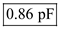

Determine the value of low-to-high propagation delay.
Substitute  for and for
for and for  in the equation.
in the equation.

Thus, the value of low-to-high propagation delay,  is .
is .
(a)
The high-to-low propagation delay is equals to half of the low-to-high propagation delay due to the current available to charge a load capacitance is half as large as that available to discharge the capacitance.
Determine the value of low-to-high propagation delay.
Substitute for and for in the equation.
Thus, the value of low-to-high propagation delay, is .
Determine the value of high-to-low propagation delay.
Substitute for  in the equation.
in the equation.
Thus, the value of high-to-low propagation delay,  is .
is .
(b)
Write the expression for propagation delay of the inverter.
Substitute for  in the equation.
in the equation.
…… (1)
The external capacitive load of  is added at the inverter output, then its propagation delay increased by.
is added at the inverter output, then its propagation delay increased by.
…… (2)
Determine the normal combined capacitance of inverter output and input.
Divide the equation (2) by equation (1).
Thus, the estimated normal combined capacitance for inverter output and input is,
.
The propagation delay decreased by when the load inverter is removed and without additional capacitive load of is connected to the inverter.
is connected to the inverter.
…… (3)
Determine the component due to the input of the load inverter.
Divide the equation (3) by equation (1).
Substitute for  in the equation.
in the equation.
Thus, the component due to the input of the load inverter, is.
Determine the component due to the inverter output.
Substitute  for
for  and for
and for  in the equation.
in the equation.
Thus, the component due to the output inverter, is.